Sabtu, 18 Oktober 2025
Bahan diskusi
- Sampah
- Barang bekas tak terpakai
- Ruang Simulasi Iklim
- Smart Campus
- Green House
Note
-
Sofa Bekas dan Barang Bekas
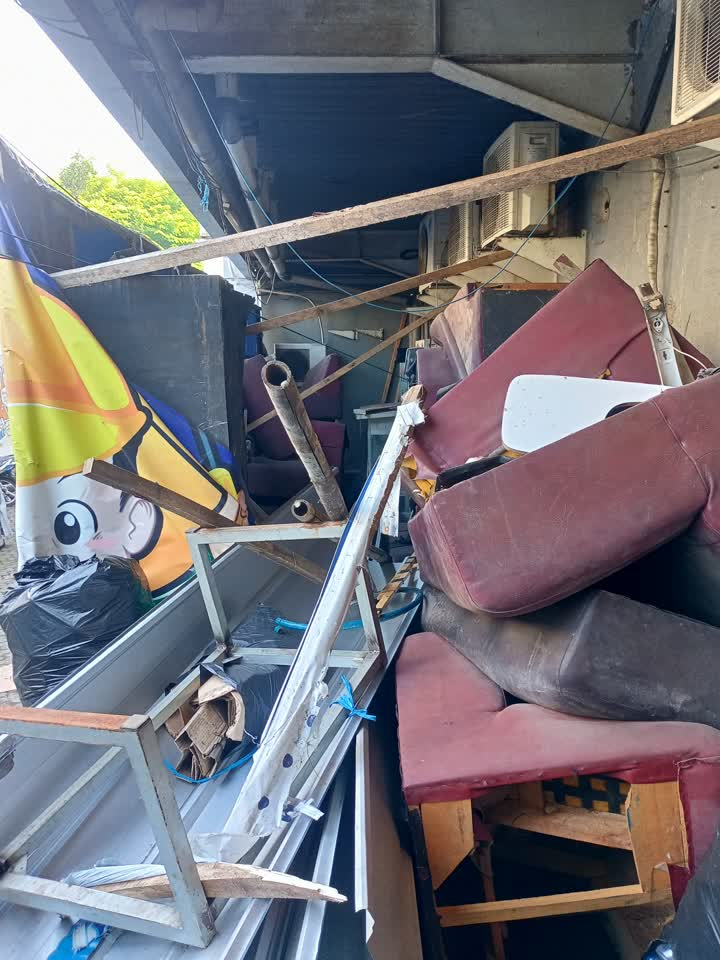 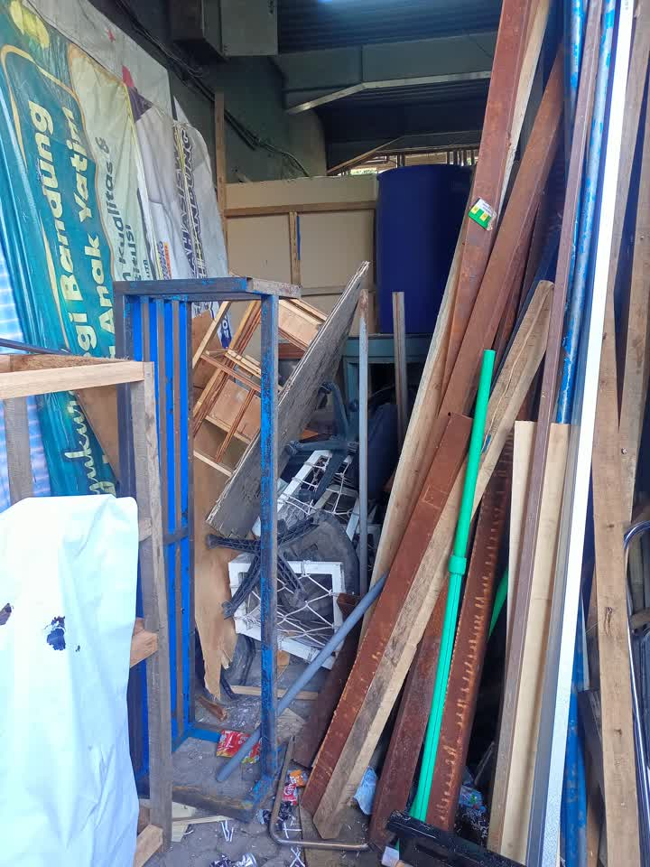- Untuk kayu akan di pilah mana yang bisa digunakan kembali dan bagian yang tidak layak digunakan kembali akan di bakar.
- Bursa dan bahan lainya (layak guna) di amankan
-
Pengambilan sampah dari pengelola external
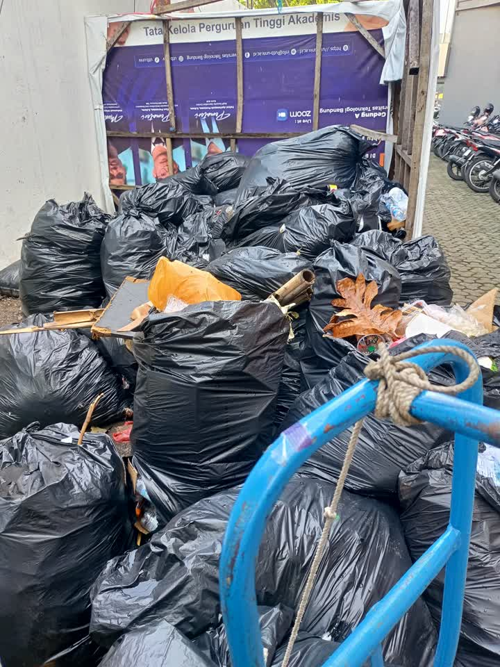Jika lebih dari satu minggu belum diangkut maka sampah akan di bakar secara berkala
1 hari 7 trash bag, pengankutan 1 x seminggu.
-
Pemilahan Sampah
-
Pengujian pemilah sampah botol (plastik dan logam/metal)
-
Memulai perancangan Pemilah sampah secara umum menggunakan Computer Vision
-
-
Daur Ulang atau Pengolahan
-
Botol Plastik
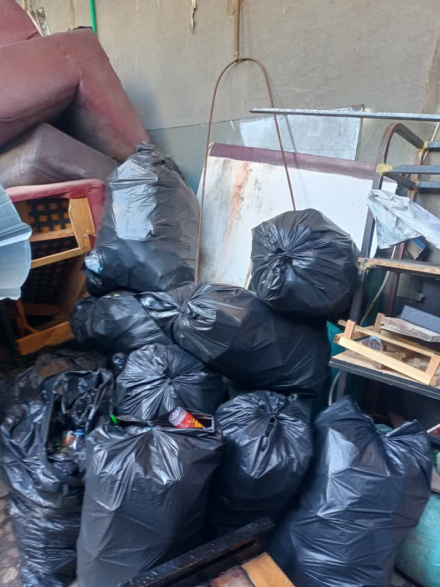 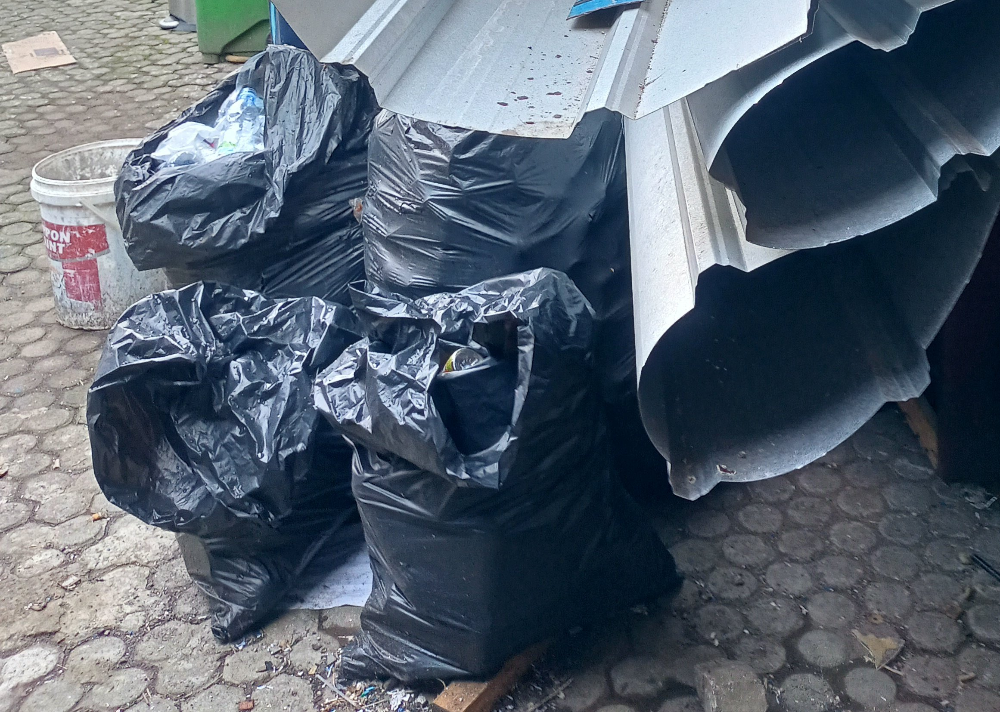Solusi Alur Note Jual Hasil Cacah Sampah botol di hancurkan menggunakan mesin pencacah Jual Utuh Sampah botol di pilah dengan tutupnya Di lelehkan Sampah botol di lelehkan untuk jadi bahan cetak produk tertentu Filament 3D Printer - -
Organik
Solusi Alur Note Pupuk Sampah botol di hancurkan menggunakan mesin pencacah -
Kayu
-
-
Smart Campus
- Sheryl & Aima: Deep Learning Mengubah Teks Menjadi Video/GIF Bahasa Isyarat
- Rifky: Deteksi posisi kebakaran sensor, alat semprot air.
- M Dimas dan Aridwan: Deep Learning Video ke Text (handle semua / cari 1 orang teman lagi)
- Dzikri: Deteksi Mengantuk pada Kendaraan (handle semua / cari 1 orang teman lagi)
- Syukrilah, Ahmad dan Nizar: Computer Vision Filter sampah Otomatis menggunakan YOLO
-
Green House
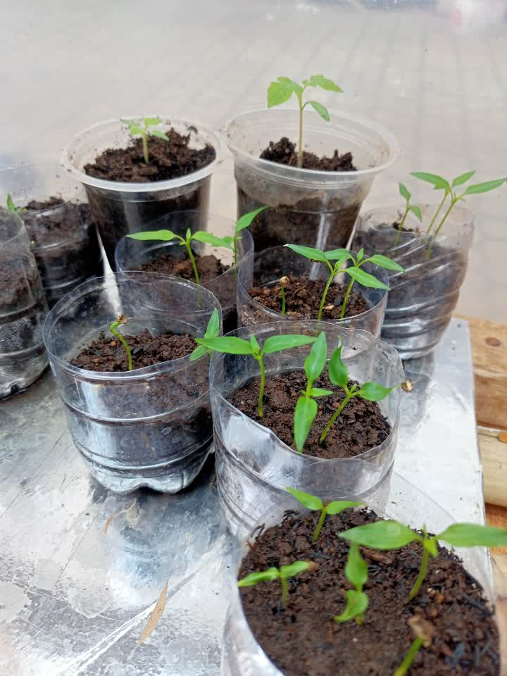 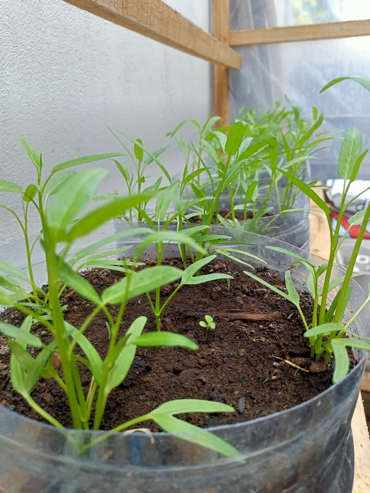 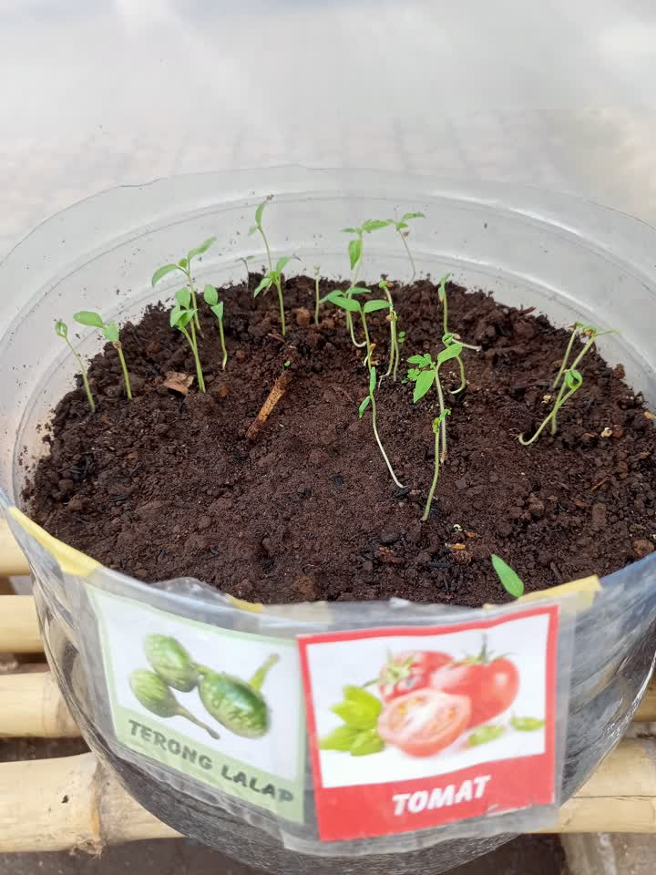 -
Ruang Simulasi Iklim
- Mahasiswa yang mencatat / mengambil data dapat mempengaruhi fokus orang yang sedang melakukan simulasi
- Nilai tidak begitu stabil karena fokus terganggu
- Penacacatan manual rawan hialang dan tidak terstruktur, kerana data akan di kumpulkan dan di analisis
Saran
- Penerapan sistem berbasis IoT, guna memudahkan pengumpulan data.
- Penggunaan Sensor dan Aktuator untuk menunjang Monitoring dan Kendali Ruangan.
- Pembuatan Simulasi Suara agar simulasi lebih nyata.
- Alat berbasis Portable, guna mempermudah penyesuaian dari keinginan pengguna sistem.
- Pembuatan Server Lokal guna memudahkan pengelolaan dan akses Data.
Note
- Pemilah Sampah, sift pagi jam 13:00, sift siang jam 20:00
- Pembakaran,
SIKLUS PENGOLAHAN SAMPAH

SAMPAH ORGANIK
1. Eco-Enzyme
Takaran
| No | Bahan | Jumlah |
|---|---|---|
| 1 | Air | 60% |
| 2 | Bahan Baku | 30% |
| 3 | Gula Merah | 10% |
Proses Pembuatan

2. Kompos
Takaran (Aktivator)
| No | Bahan | Jumlah |
|---|---|---|
| 1 | Air | 80% |
| 2 | EM4 | 10% |
| 3 | Gula Merah | 10% |
Proses Pembuatan

3. Kalkulator
*klik link/tombol dibawah
4. Pencacah Sampah Organik Kasar/Halus
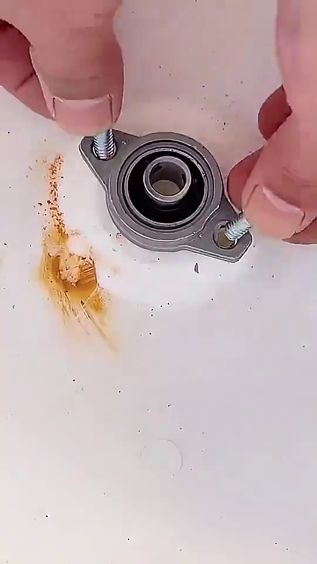 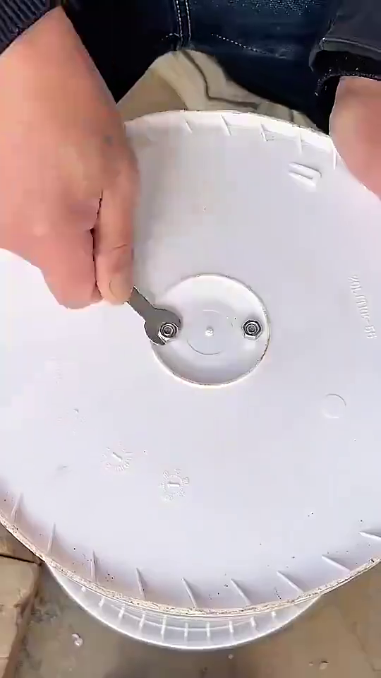 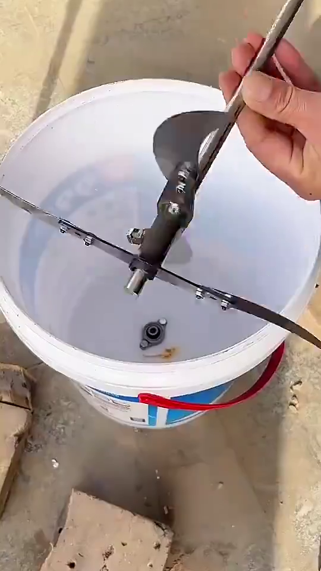 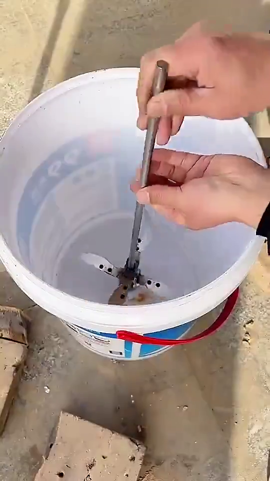 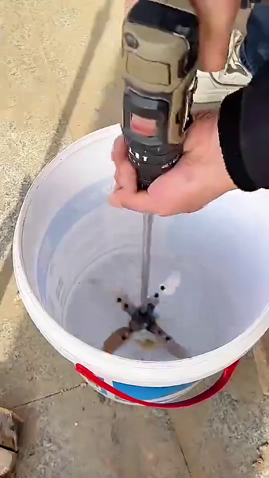 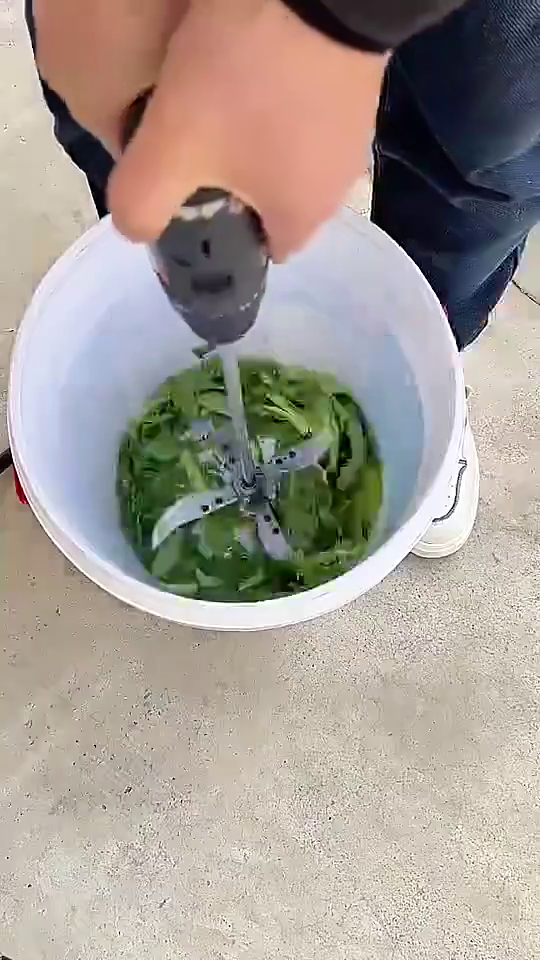 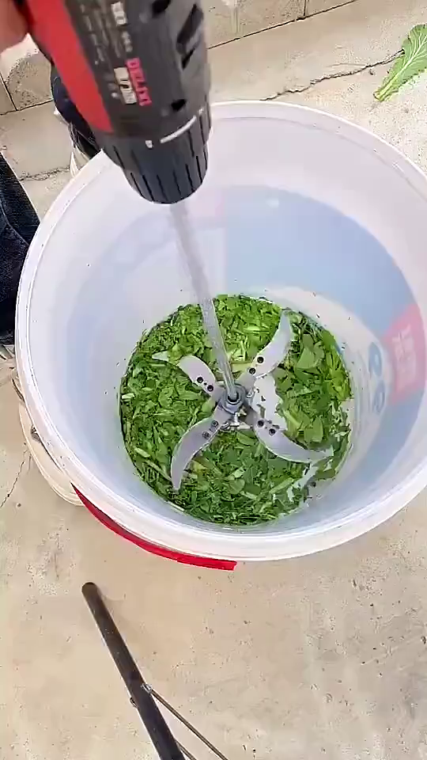 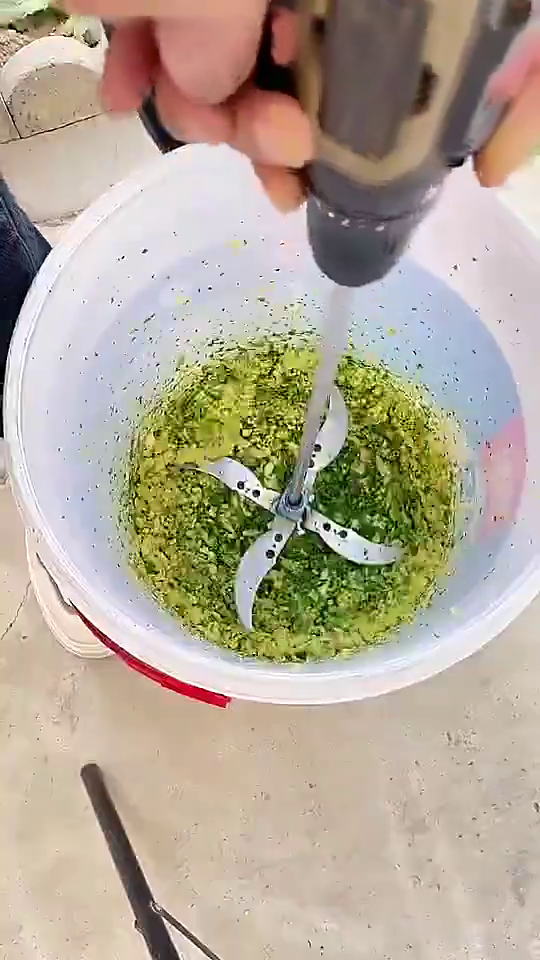- Alat Portable
- Ukuran ember bisa di sesuaikan
- Perawatan mudah
- Ukuran dan Jumlah pisau bisa di Custom
- Mesin penggerak menggunakan Mesin Bor atau sejenisnya
- Harga kisaran 70k
SAMPAH BOTOL
1. Botol PLastik
2. Tutup Botol PLastik
3. Botol Kaleng

1. Disabilitas Fisik (mobilitas terbatas)
2. Disabilitas Netra / Buta (sensorik)
3. Disabilitas Rungu / Wicara
4. Disabilitas Mental / Jiwa (psikososial)
5. Disabilitas Intelektual & Ganda
6. Solusi lintas-disabilitas (berguna untuk banyak tipe)
IDE TUGAS UAS MIKROKONTROLER
1. Sistem Absensi Otomatis Berbasis RFID/NFC
Deskripsi:
Mahasiswa cukup menempelkan kartu RFID/NFC ke pembaca (reader), sistem otomatis mencatat nama, NIM, dan waktu hadir ke database.
Komponen: RFID reader (RC522), tag/kartu RFID, mikrokontroler (ESP32/Arduino), LCD atau web dashboard.
Output: Data absensi tersimpan otomatis dan dapat diakses dosen melalui web/app.
2. Panel Pengumuman Digital
Deskripsi:
Papan pengumuman elektronik menampilkan jadwal kuliah, pengumuman penting, atau event kampus secara real-time melalui koneksi Wi-Fi.
Komponen: ESP32, modul LED matrix / OLED / e-ink display.
Output: Tampilan teks atau gambar pengumuman yang dapat diubah dari server/web.
3. Sistem Parkir Mini (Monitoring Slot Parkir)
Deskripsi:
Sistem pendeteksi slot parkir kosong/terisi menggunakan sensor jarak. Data dikirim ke layar atau web untuk membantu pengguna.
Komponen: Ultrasonic sensor, ESP32, LED indikator, LCD atau web panel.
Output: Tampilan jumlah slot kosong dan peta lokasi parkir.
4. Pendeteksi Kualitas Udara (CO₂/PM2.5)
Deskripsi:
Mengukur kualitas udara di area kampus (CO₂, debu, suhu, kelembapan) dan menampilkan hasil digital serta mengirim data ke server.
Komponen: Sensor MQ-135/SDS011, DHT22, ESP32, display OLED.
Output: Nilai CO₂/PM2.5 real-time dan grafik tren di web dashboard.
5. Monitoring Konsumsi Listrik per Ruangan
Deskripsi:
Alat yang memantau penggunaan daya listrik (tegangan, arus, daya) di tiap ruangan kampus.
Komponen: Sensor arus (ACS712), sensor tegangan (ZMPT101B), ESP32.
Output: Tabel/grafik pemakaian listrik per jam/hari.
6. Sistem Lampu Jalan Otomatis
Deskripsi:
Lampu otomatis menyala saat malam dan mati saat siang atau ketika ada gerakan terdeteksi.
Komponen: Sensor LDR, sensor PIR, relay, ESP32.
Output: Lampu hemat energi yang bekerja otomatis sesuai kondisi lingkungan.
7. Pendeteksi Kebisingan (Noise Logger)
Deskripsi:
Alat mencatat tingkat kebisingan di area kampus dan menyimpan data untuk analisis.
Komponen: Sensor suara (MAX4466/LM393), ESP32, SD card module.
Output: Data dB (desibel) yang tersimpan dan bisa ditampilkan dalam grafik.
8. Sistem Deteksi Kebocoran Air
Deskripsi:
Sensor mendeteksi air di area tertentu (lantai, pipa) dan mengirim notifikasi jika terjadi kebocoran.
Komponen: Water leak sensor, buzzer, ESP32.
Output: Alarm bunyi + notifikasi Telegram/web jika kebocoran terdeteksi.
9. Smart Locker (Pinjam Alat Kampus)
Deskripsi:
Loker otomatis yang dibuka menggunakan kartu RFID/NFC untuk meminjam dan mengembalikan alat laboratorium.
Komponen: RFID reader, solenoid lock, ESP32, LCD display.
Output: Data pengguna + waktu peminjaman tersimpan otomatis.
10. Sistem Antrean Digital
Deskripsi:
Sistem antrean dengan nomor panggilan otomatis, layar tampilan, dan suara pemanggilan.
Komponen: ESP32, display OLED/7-segment, speaker, tombol next.
Output: Tampilan nomor antrean dan suara otomatis “Nomor X silakan ke loket”.
11. Sistem Irigasi Otomatis untuk Vertical Garden
Deskripsi:
Penyiraman tanaman otomatis berdasarkan tingkat kelembapan tanah.
Komponen: Soil moisture sensor, pompa mini, ESP32.
Output: Pompa menyala saat tanah kering dan berhenti saat lembab.
12. Pendeteksi Asap & Alarm Dini
Deskripsi:
Sistem mendeteksi adanya asap di bengkel atau lab, memicu alarm dan notifikasi.
Komponen: Sensor asap (MQ-2), buzzer, ESP32.
Output: Alarm bunyi + indikator LED + notifikasi Telegram/web.
13. Stasiun Isi Ulang Air Minum Otomatis
Deskripsi:
Mesin otomatis mengisi botol sesuai volume tertentu dan menghentikan aliran saat penuh.
Komponen: Sensor ultrasonik/flow sensor, pompa, relay, ESP32.
Output: Volume air terisi sesuai takaran + display volume.
14. Sistem Irigasi Otomatis Berbasis Kelembapan
Deskripsi:
Mirip poin 11 tapi lebih fokus pada kebun luar ruangan dengan area luas.
Komponen: Soil moisture sensor, solenoid valve, ESP32.
Output: Grafik kelembapan dan status penyiraman otomatis.
15. Sistem Ventilasi Otomatis
Deskripsi:
Kipas atau jendela otomatis aktif sesuai suhu dan kelembapan ruangan.
Komponen: DHT22, servo motor, kipas DC, ESP32.
Output: Otomatis buka jendela/nyalakan kipas saat panas dan lembab.
16. Miniatur Pembangkit Listrik Tenaga Surya
Deskripsi:
Miniatur panel surya dengan sistem pelacak matahari agar selalu menghadap sinar optimal.
Komponen: LDR x2, motor servo, panel surya mini, ESP32.
Output: Panel bergerak otomatis mengikuti arah cahaya.
17. Miniatur Pembangkit Listrik Tenaga Air
Deskripsi:
Model turbin air kecil untuk menghasilkan listrik, menampilkan tegangan/arus yang dihasilkan.
Komponen: Turbin air mini, generator DC, multimeter digital, ESP32.
Output: Tampilan daya listrik hasil aliran air.
18. Pintu Otomatis
Deskripsi:
Pintu terbuka otomatis dengan sensor gerak atau akses RFID.
Komponen: PIR sensor / RFID, motor servo, ESP32.
Output: Pintu terbuka otomatis saat orang mendekat atau kartu terdeteksi.
19. Miniatur Kampus Pintar
Deskripsi:
Model kampus skala kecil dengan sistem penerangan, pintu, dan kontrol suara via Google Home atau web.
Komponen: ESP32, relay, LED, servo, modul IoT.
Output: Simulasi sistem otomasi kampus dengan kontrol pintar.
20. Wastafel Cuci Tangan Otomatis
Deskripsi:
Sensor mendeteksi tangan lalu mengaktifkan aliran air dan hand sanitizer otomatis.
Komponen: IR sensor, pompa mini, relay, ESP32.
Output: Air dan sanitizer keluar otomatis tanpa sentuhan.
21. CCTV ESP32 Cam dengan Telegram Bot
Deskripsi:
Kamera ESP32 Cam mengirimkan foto/video real-time ke Telegram jika mendeteksi gerakan.
Komponen: ESP32 Cam, sensor PIR.
Output: Gambar atau video terkirim otomatis ke Telegram.
22. Monitoring Kondisi Lingkungan Kampus
Deskripsi:
Alat memantau suhu, kelembapan, tekanan udara, dan hujan secara online.
Komponen: DHT22, rain sensor, BMP280, ESP32.
Output: Dashboard online menampilkan kondisi lingkungan real-time.
23. Deteksi Objek Gerak di Kelas
Deskripsi:
Sistem pendeteksi keberadaan orang/mahasiswa di kelas untuk menghitung jumlah atau memicu sistem lain (misal lampu otomatis).
Komponen: PIR sensor, ultrasonic, ESP32, LED.
Output: Tampilan jumlah orang di ruangan dan lampu menyala otomatis.
24. Smart Trash Bin (Tempat Sampah Pintar)
Deskripsi:
Tempat sampah yang otomatis membuka tutup saat ada tangan atau benda mendekat, dan memberi notifikasi ketika penuh.
Komponen: Ultrasonic sensor, servo motor, ESP32, sensor berat (load cell).
Output: Tutup terbuka otomatis + peringatan “Tempat Sampah Penuh” di display/web.
25. Sistem Pendeteksi Banjir Miniatur
Deskripsi:
Prototipe sistem deteksi tinggi air di parit atau saluran kampus dengan alarm dan notifikasi dini.
Komponen: Ultrasonic sensor, buzzer, ESP32.
Output: Tampilan ketinggian air real-time + alarm saat level bahaya.
26. Smart Door Lock Berbasis Password & RFID
Deskripsi:
Kunci pintu otomatis yang bisa dibuka dengan password keypad atau kartu RFID, dilengkapi sistem keamanan jika salah input.
Komponen: Keypad 4x4, RFID RC522, servo, ESP32.
Output: Solenoid/servo membuka pintu sesuai autentikasi valid.
27. Smart Desk (Meja Pintar Mahasiswa)
Deskripsi:
Meja belajar dilengkapi sensor cahaya dan suhu untuk mengatur lampu serta kipas otomatis sesuai kondisi ruangan.
Komponen: LDR, DHT11, relay, ESP32.
Output: Lampu dan kipas nyala otomatis, data kondisi ruangan ditampilkan di OLED.
28. Smart Class Automation
Deskripsi:
Sistem otomatisasi ruang kelas: lampu, kipas, dan proyektor aktif otomatis saat kelas dimulai atau terdeteksi orang.
Komponen: PIR sensor, relay module, ESP32, timer RTC DS3231.
Output: Ruangan hemat energi karena perangkat menyala sesuai jadwal atau kehadiran.
29. Sistem Keamanan Sepeda di Area Kampus
Deskripsi:
Sistem alarm sepeda yang aktif saat ada gerakan mencurigakan, dengan notifikasi ke HP melalui Telegram.
Komponen: MPU6050 (sensor gerak), buzzer, ESP32, Telegram bot API.
Output: Alarm bunyi + pesan Telegram saat sepeda digerakkan tanpa izin.
30. Smart Energy Logger (Pencatat Energi Otomatis)
Deskripsi:
Alat pencatat penggunaan energi listrik tiap jam yang tersimpan di SD card atau dikirim ke server.
Komponen: Sensor arus ACS712, ESP32, modul SD card.
Output: Log data daya (Watt) otomatis untuk analisis efisiensi listrik kampus.